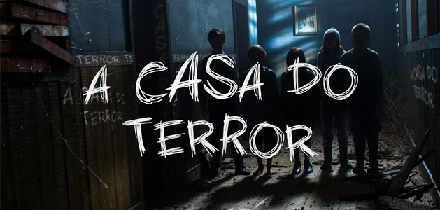

Top filmes que mereciam continuação
Embora nunca tenha ficado “em baixa”, o terror nunca esteve tão bem. Nos últimos anos, o gênero mostrou várias facetas ao público, desde filmes mais introspectivos, cheios de tensão psicológica, ao gore desenfreado. Isso, é claro, sem contar as incontáveis sagas e franquias que estão retornando após terem passado muito tempo na geladeira dos grandes estúdios.
E levando em conta que o terror é um dos gêneros mais “franquiáveis” do cinema, com a possibilidade de diversas sequências, continuações, reboots, spin-offs e todo tipo de obra derivada que você possa imaginar, temos uma leva de lançamentos recentes que muitos gostariam de ver continuados, de alguma forma. Assim, aqui estão alguns filmes de terror dos últimos anos que merecem uma sequência!
Para esta lista, estamos desconsiderando filmes que já tiveram sequências, derivados ou spin-offs anunciados, como Rua do Medo, Invocação do Mal e Premonição, entre outros!
Histórias Assustadoras para Contar no Escuro (2019)

Baseado na série de livros de Alvin Schwartz, que trazem uma miríade de contos de horror baseados em lendas urbanas,
Histórias Assustadoras para Contar no Escuro foi um projeto bem interessante, produzido por ninguém
menos que Guillermo del Toro e dirigido por André Øvredal, com um baita elenco de estrelas em ascensão.
Sinopse:
O filme segue a história de uma menina e seu grupo de amigos, que ao entrar em uma casa mal-assombrada, recuperam um livro que
pertencia a uma velha bruxa - e era onde ela escrevia uma série de histórias assustadoras.
A trama do primeiro filme termina com um baita cliffhanger, e embora o diretor já tenha mostrado interesse em voltar para uma sequência, nada foi anunciado.
O Ritual (2017)

Um baita exemplar do que o folk horror é capaz de fazer, o longa é muito fechadinho em si mesmo e apresenta uma história
com começo, meio e fim. No entanto, seria muito interessante ver um prequel que pudesse
contar um pouco mais da história da criatura que vemos ao longo do filme, e como essa abominação foi convocada para o nosso mundo.
Sinopse:
O Ritual acompanha um grupo de amigos que decidem se aventurar em uma floresta da Suécia, para homenagear
um deles que morreu em um evento trágico. No entanto, em sua jornada, eles acabam encontrando
um mal absoluto e terrível, escondido em um pequeno vilarejo.
A morte do demonio
.jpeg)
No começo, todos levantaram a sobrancelha para o remake do clássico ‘A Morte do Demônio’, mas Fede Alvarez
pegou todos de surpresa ao entregar um filme visceral e com o mesmo espírito que o original. O remake foi um sucesso nas bilheterias,
mas os planos para uma sequência foram abandonados para que a série ‘Ash vs. Evil Dead’
tivesse o seu momento. Agora, com o cancelamento da série, e o óbvio interesse de Alvarez em continuar sua visão, será que
finalmente teremos a aguardada sequência?
Sinopse:
O filme conta a história de cinco amigos que decidem passar o fim de semana em uma cabana isolada na floresta.
Lá, eles encontram o Livro dos Mortos, um artefato capaz de despertar uma força demoníaca23. Os demônios começam a
possuir jovem por jovem, deixando apenas um para lutar pela sobrevivência
A Casa do Terror (2019)
De todos os subgêneros do horror, o slasher é um dos que mais brinca com a possibilidade das sequências
- afinal, basta você trazer os mesmos vilões de volta, dar a eles mais momentos grotescos e
aumentar a pilha de corpos. Um filme que, sem dúvidas, merecia uma sequência é A Casa do Terror, de 2019.
Sinopse:
Na noite de Halloween, grupo de amigos acaba parando em uma casa de assombrações que promete sustos e um clima
muito mais aterrorizante do que qualquer outra. À medida que vão adentrando o local, as
coisas parecem ser reais demais, e logo eles se verão correndo pelas suas vidas contra um grupo de lunáticos.